익명 이야기 · 이야기 쓰기
- 지금: 예전 틀 그대로예요. 큰 제목 "익명으로 남기는 이야기" + 설명 두 줄 + 빈 상자 + "파일 선택" 칸 두 개 + 맨 아래 버튼(하단 메뉴에 가려짐).
- 팀 링크에서 가져온 것: 머리 줄 "이야기 쓰기" + 오른쪽 올리기, 사진 · 음성은 아이콘 두 개로, 줄 있는 편지지 + 날짜, 안내는 빈 칸 안 글로("최소 5글자 이상 작성해주세요. / 서로를 존중하는 이야기를 남겨주세요.").
- 우리 결로 바꾼 것: 공용 머리 줄(가운데 제목 · 오른쪽 글자 버튼, 5글자 전엔 꺼짐), 글은 편지 쓰기와 같은 고운바탕 16/32 + 옅은 줄, 흰 상자 + 테두리 대신 은은한 회색 종이, 아이콘은 Figma Line 세트 24, 사진은 지금처럼 최대 3장.
시안
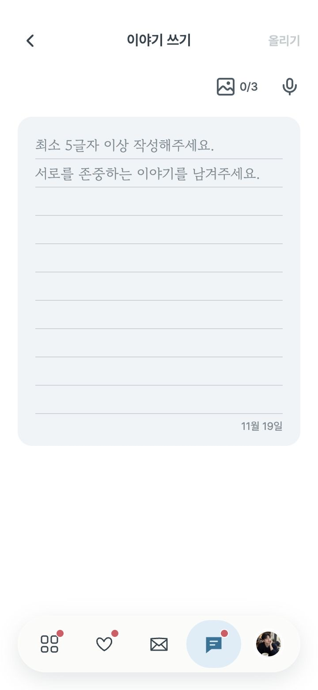
P1팀 링크 구조 + 회색 종이 · 도구는 종이 위 오른쪽, 날짜는 종이 안 오른쪽 아래
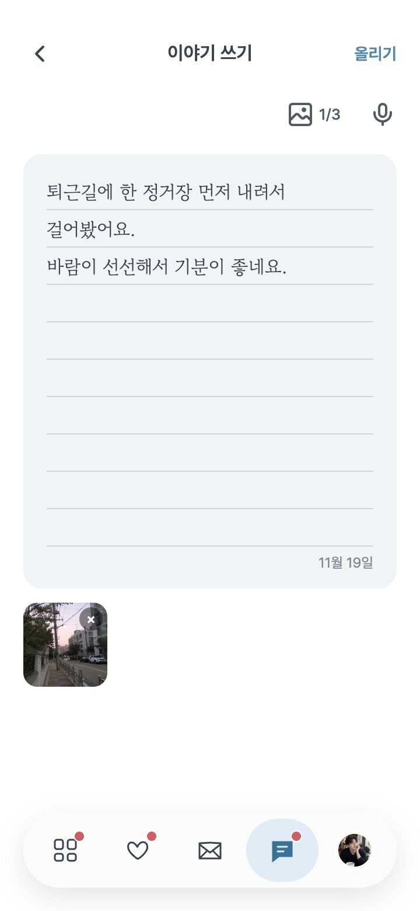
P1쓴 뒤 · 올리기 켜짐, 사진은 종이 아래
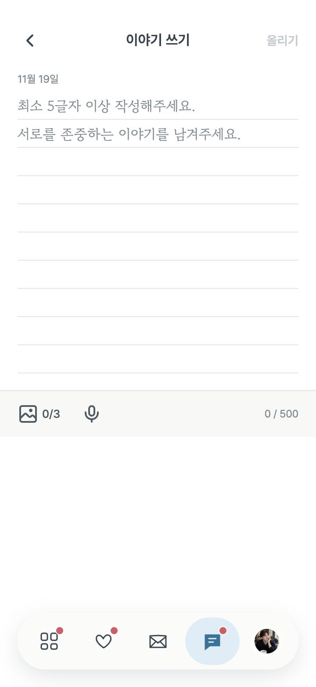
P2종이 없이 줄만 · 도구는 아래 · 흰 화면에 바로 쓰고, 사진 · 음성 · 글자 수는 아래 막대
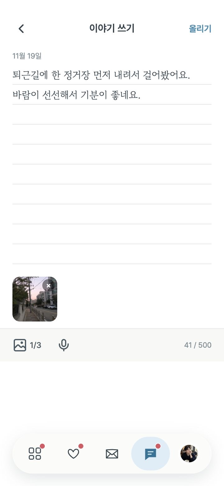
P2쓴 뒤 · 막대는 키보드 위에 붙어요
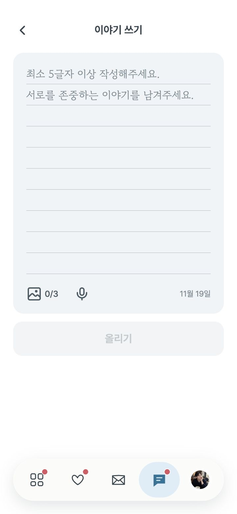
P3도구를 종이 안에 · 아래 큰 버튼 · 사진 · 음성 · 날짜가 종이 아래 한 줄, 올리기는 아래 꽉 찬 버튼
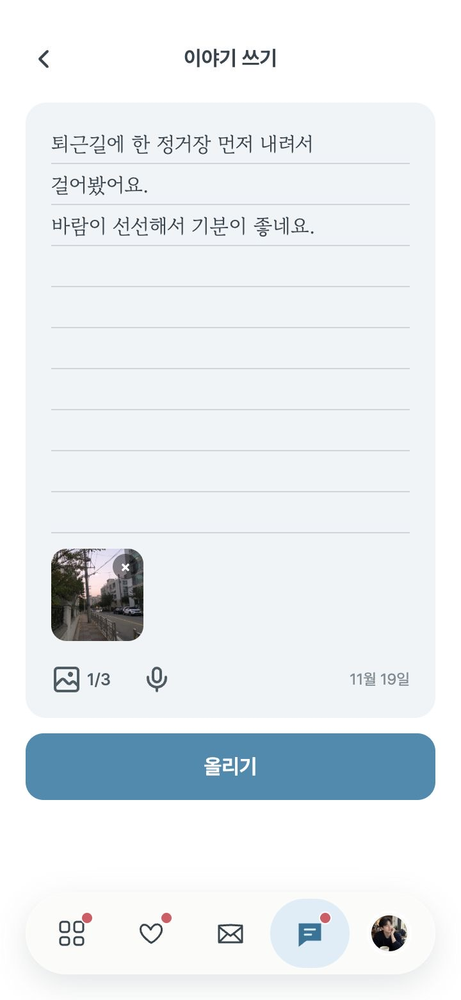
P3쓴 뒤 · 사진도 종이 안
P3 · 음성 메시지 넣기
마이크를 누르면 시트가 올라와 바로 녹음해요(최대 1분). 녹음한 걸 들어 보고 넣으면 종이 안에 사진처럼 붙고, 올라간 글에서는 같은 모양의 재생 줄로 보여요. 음성은 한 개만이라 넣은 뒤엔 마이크가 흐려져요.
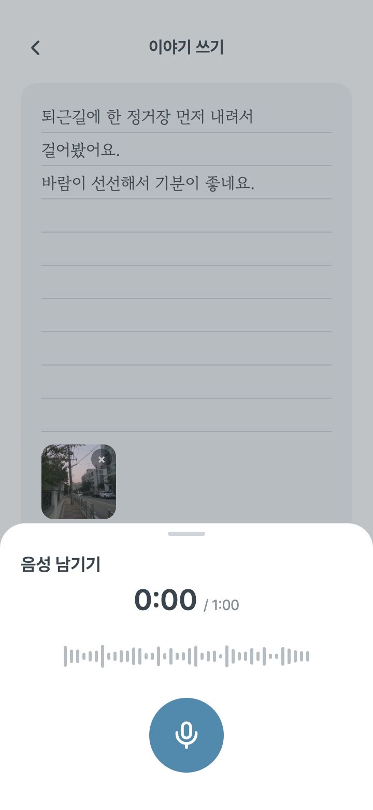
1녹음 전 · 0:00 / 1:00 · 파란 녹음 버튼
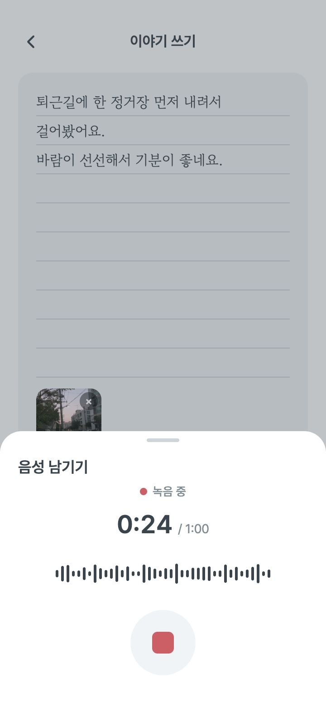
2녹음 중 · 빨간 점 "녹음 중" · 시간 · 소리 막대 · 멈추기
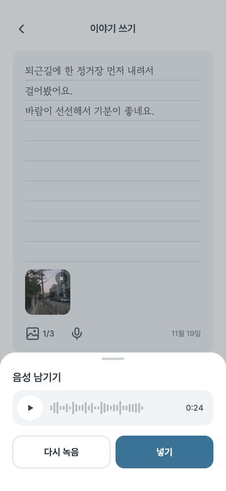
3들어 보기 · 재생 줄 + 다시 녹음 / 넣기
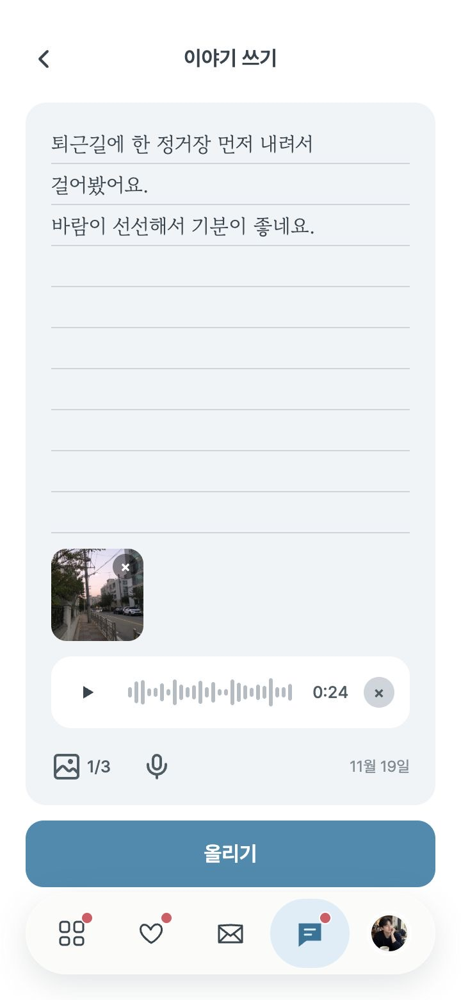
4글에 붙은 모습 · 사진 아래 재생 줄 + × 빼기
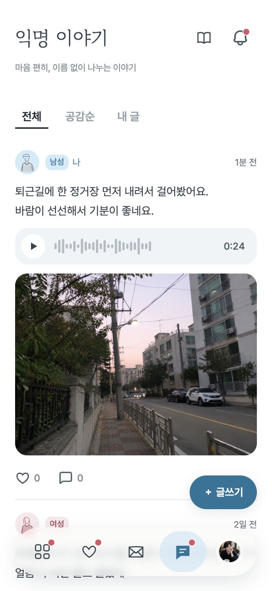
5올라간 뒤 · 목록 · 글 아래 재생 줄, 목록에서 바로 들어요
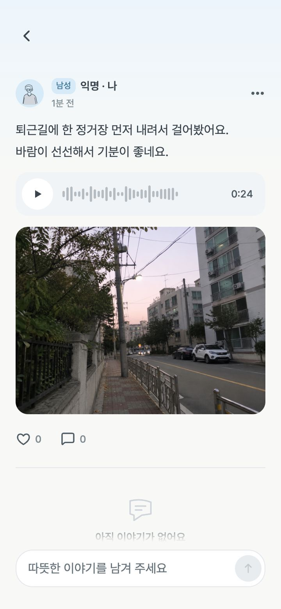
6올라간 뒤 · 글 안 · 지금의 기본 재생기 대신 같은 재생 줄
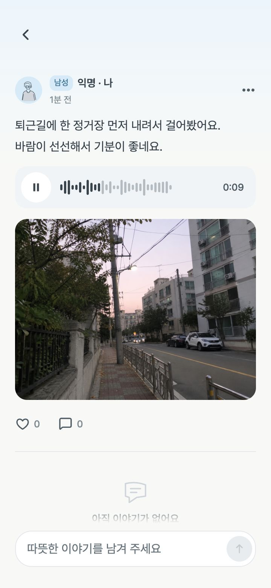
7재생 중 · 멈춤 버튼 · 들은 만큼 막대가 진해져요
지금 · 팀 링크
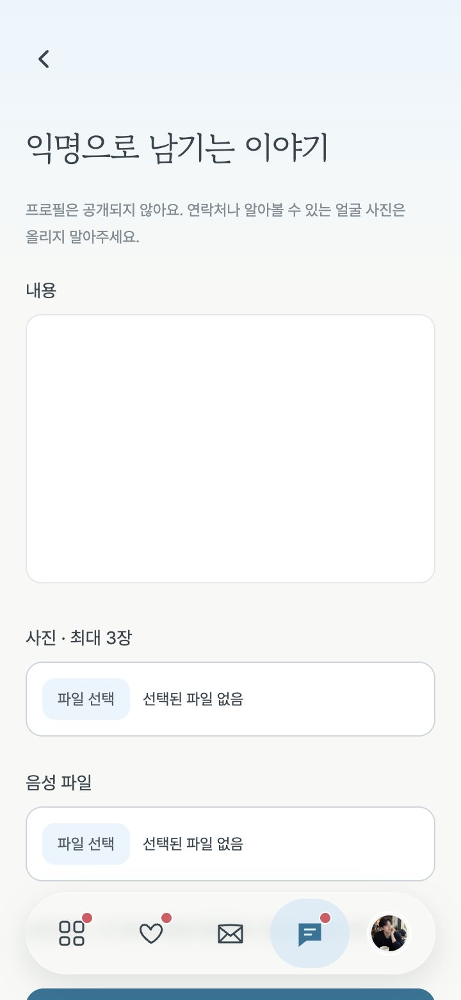
지금예전 틀 · 파일 선택 칸
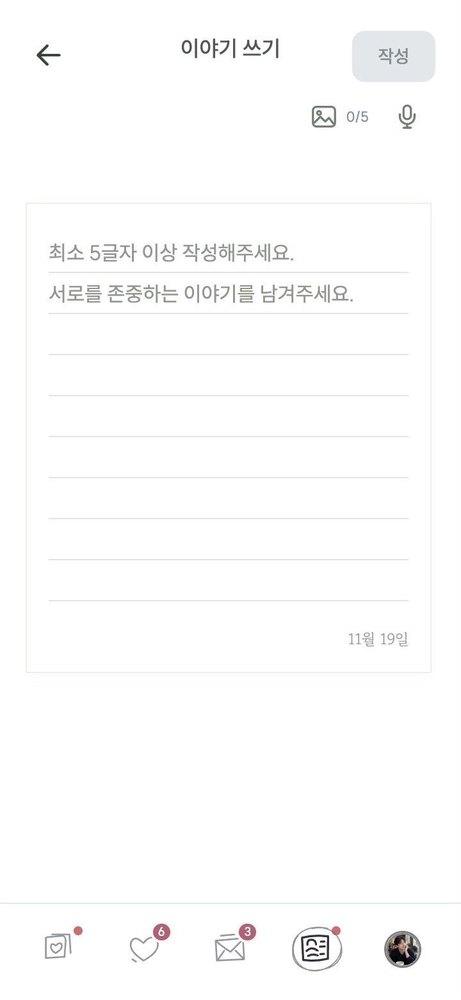
팀 링크머리 줄 작성 · 아이콘 두 개 · 줄 있는 종이